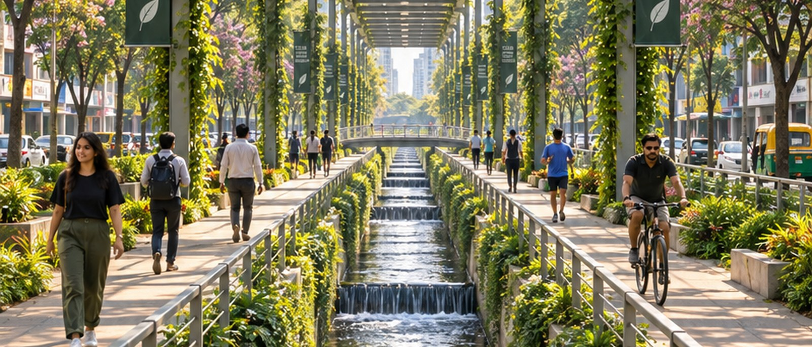
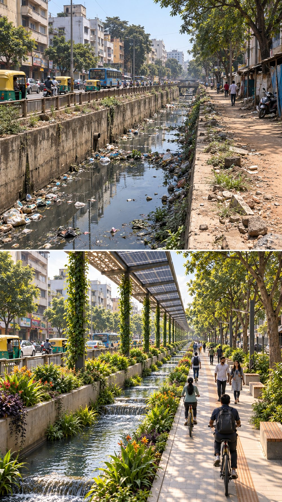
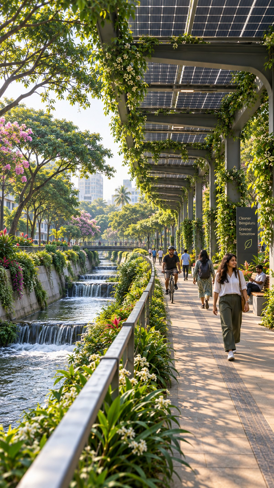
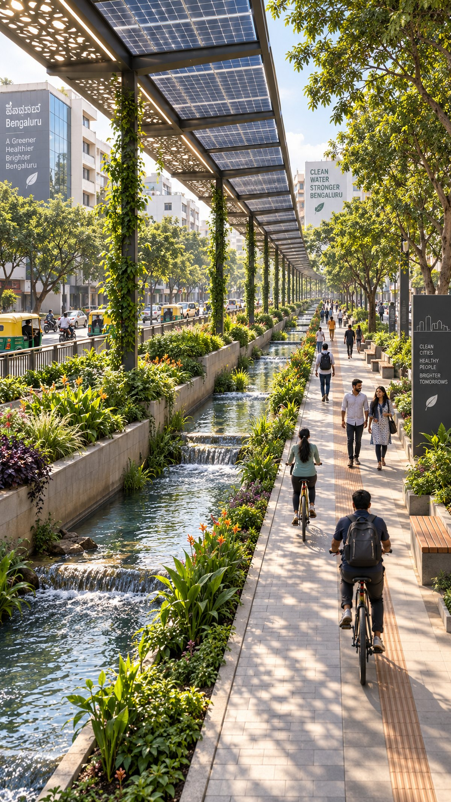
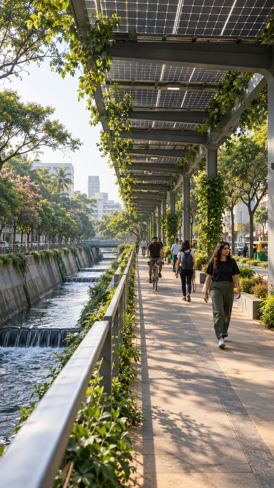
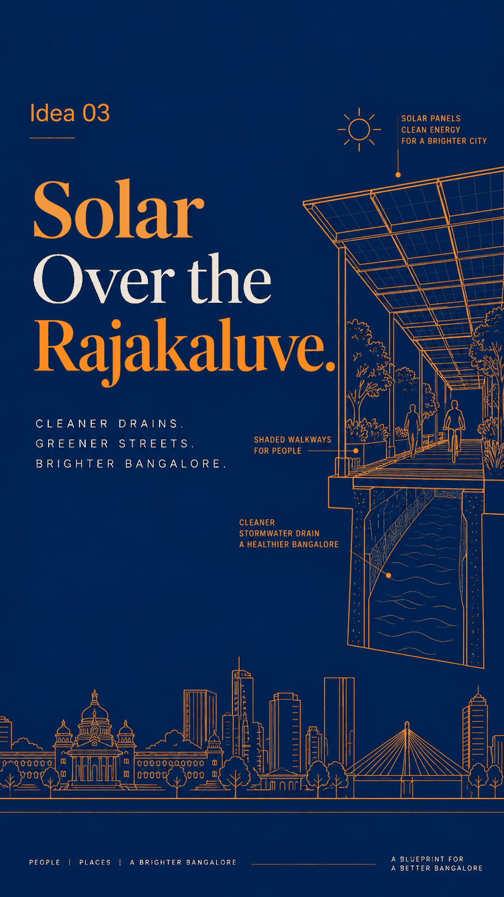

"No new land needed. The infrastructure is already ours. We just never looked up."
A rajakaluve is a stormwater channel — the artificial drain network built to move rainwater across Bangalore and into its lakes. That is the only job it was ever meant to do.
Today it carries garbage, sewage and stagnant filth. It sits open to the sky through every neighbourhood in the city, and because it is open, anything can be thrown into it — and is. Kilometres of exposed, polluted drains across the city. We walk past them, hold our breath, and look away.

"Kilometres of exposed, polluted drains across the city. Kilometres of unused potential — sitting right there."
Cover the rajakaluve with an elevated solar canopy. Not a slab that seals the drain shut and makes it impossible to clean — a raised, removable panel structure that shades the channel, keeps garbage out, and turns the length of the drain into a generating asset.
Underneath, the water flows the way it was always supposed to: covered, shaded, no longer a dumping ground. Above, every metre of panel generates electricity — for the streetlights on that road, for the water pumps that serve the neighbourhood, and for whatever is left over to go back into the grid.
Alongside it, the maintenance edge the drain already needs becomes something people can actually use — a shaded walkway on a street that has never had one.

Width, alignment, sun exposure, road access. Not every stretch is a candidate — the straight, wide, unshaded ones along main roads are where this starts.
Panels on a raised frame above the channel, with removable sections at intervals. The drain stays reachable for desilting — covering it must never mean losing the ability to clean it.
Once the top is covered and the sides are edged, the drain stops being an open bin. The single largest source of blockage is designed out rather than cleaned up after.
Streetlights, water pumps, park lighting, BBMP buildings along the route. Local generation used locally — the shortest possible distance between panel and socket.
Whatever the street doesn't use is metered and sold. The canopy stops being a cost line and becomes revenue that pays for the drain's own maintenance.
The drain's maintenance edge becomes a footpath and cycle lane under the same canopy — shade in a city that badly needs it, on land nobody had to acquire.
One kilometre, fully instrumented — units generated, rupees saved, silt removed, complaints filed. Make the pilot's data public, then scale on evidence rather than on a press release.
| Factor | Today | Solar-covered |
|---|---|---|
| Dumping into the channel | Open to the sky — anything goes in | Covered and edged — designed out |
| Land required | — | Zero. The corridor is already public |
| Electricity generated | None | Every sunlit metre of the alignment |
| Who pays for upkeep | BBMP budget alone | Power savings and export revenue offset it |
| The street beside it | Broken edge, no shade, no footpath | Shaded walkway and cycle lane |
| Smell, mosquitoes, overflow | Constant, worst in monsoon | Reduced — covered flow, less blockage |
Garbage can no longer be thrown into the drain
Clean power generated on land the city already owns
Streetlights and water pumps run on the drain beside them
Shaded walkways and cycle lanes with zero land acquisition
Less blockage means less flooding when the rain comes
Export revenue funds the drain's own maintenance
India's first canal-top solar plant, on the Narmada branch canal at Chandrasan, proved the model in 2012 — power generated over a water channel, on land nobody had to acquire, with less evaporation below.
Canal-top installations in Punjab and floating solar on Kerala's reservoirs followed the same logic: water infrastructure is linear, public, and unshaded — which is exactly what solar wants.
A stream written off as a drain and buried under a motorway was reopened as the city's most-used public corridor. Different intervention, same lesson: a neglected water channel is a civic asset in disguise.
Cities everywhere are now building solar over infrastructure that already exists — car parks, rail corridors, reservoirs — because the cheapest land for a panel is land you have already paid for.
Right now the rajakaluve is the edge of the street that everyone plans around — the side you don't walk on, the side property values dip towards, the stretch that floods first. Covered, planted and lit, that same edge becomes the side people choose.

The canopy runs along the road the drain already follows. No land acquired, no route negotiated — the alignment was decided decades ago.

Lighting, signage and planting turn a maintenance easement into somewhere people actually walk — the cheapest new public space the city can build.
This is the real risk, and it is why the canopy must be elevated and removable rather than a concrete slab. Desilting access at fixed intervals is not an optional extra — it is the condition on which the whole idea stands or falls.
Cleaning and access have to be budgeted into the contract from day one, the same way they are for canal-top solar. A pilot stretch exists precisely to measure how much output is actually lost before the city commits to a hundred more kilometres.
It doesn't, and it shouldn't pretend to. Sewage entering a stormwater channel is a separate failure that needs separate work. This idea removes the garbage, the dumping and the heat — and pays for itself while the harder problem gets solved.

"What if it was covered — not with concrete, but with solar panels? What if garbage could no longer be dumped in? What if the water underneath actually ran clean?"
These are ideas, not answers. The best version of any idea comes from debate. Watch the reel, share your thoughts in the comments, or visit the site for more detail.